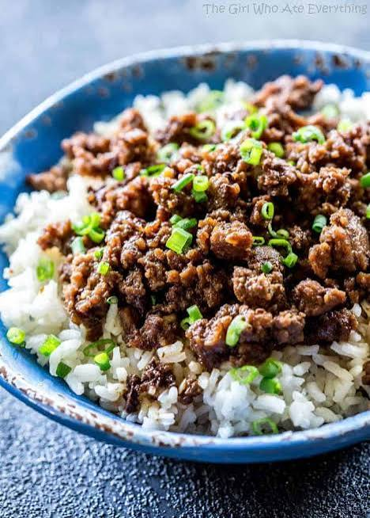

Korean Beef recipe

This recipe uses ground beef because its cheap easy and quick!
All you'll need is a small pan, rice pot and a small bowl for mixing.
Ingredients
This serves about three healthy size bowls but can easily be spread to four.
- green onion
- sesame seeds
- 1 cup of rice.
- 1lb of ground beef
- 1/2 tsp of minced garlic
- 1/4 cup brown suger ( or Honey )
- 2 teaspoons of toasted sesame oil
- 1/4 cup of soy sauce
- 1 teaspoon of ground ginger
- 3 chopped green onion
- 1/2 teaspoon of red pepper flakes
How to cook
- Start some rice on the stove. I use basimiti rice over. jasmine rice as its very similar but It seems to cook faster and drys out better.
By the time you cook everything else your rice should be done.
- In bowl mix the Brown suger, minced garlic, a teaspoon of the sesame oil,
red pepper flakes, soy sauce, and ginger. Set the bowl aside for later.
- Next add the rest of the toasted sesame oil in a pan and cook your ground beef.
The smell of the toested sesame oil cooking the beef is my favorite part of cooking this.
- If your going to add shredded carrots or broccoli this would be the time to do so,
add them to your pan and put a lid on to help them steam. If you don't have a big enough pan just cook them seperate.
- Turn the heat off and add your sauce mix to beef and mix well.
- Add your vegetables on the side and chopped green onions and sesime seeds on top and your done!
storage and left over's
Sometimes there is enough of this to take to lunch in the morning and it warms up great in the microwave. I usally add a little soy sauce to help it moisten up.
This is also a good meal just to make for lunch. Between the rice and beef working contruction this gave me plenty of energy and and carbs to keep going.
Side note
If you add to much soy or to much ginger you can always add the oppisite to help counteract the flavor.
Hoisen sauce is something ill use sometimes in the mix just for more flavor but its not needed.